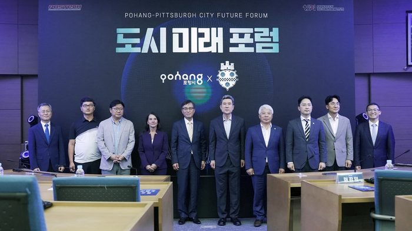

일자 2023.09.15

행사개요
행 사 명 : POSTECH-CMU(카네기멜론대학) 도시 미래 포럼
주 제 : 유사한 환경의 포항과 피츠버그 양 도시 간의 교류 협력 증대
기 간 : 2023.09.15(금), 15:00 ~ 18:00
장 소 : 포스코 국제관 대회의실
프로그램
2023-09-15
구분
시간
세부내용
비고
스마트제조의 미래
15:00∼15:05
5’
개회 및 내빈소개
15:05∼15:15
10’
Opening Remarks: Next-generation Manufacturing in Pohang
Kang-deok Lee
(Pohang City Mayor)
15:15∼15:45
30’
US National Strategy for Advanced Manufacturing
Sandra DeVincent Wolf
(Executive Director, Manufacturing Futures Institute & NextManufacturing Center, Carnegie Mellon University)
15:45∼16:15
30’
Factory Intelligence Laboratory at POSTECH
Duck Young Kim
(Professor, Department of Industrial and Management Engineering, Pohang University of Science and Technology)
16:15∼16:30
15’
Coffee Break
데이터와 로봇의 산업
제조 적용
16:30∼17:00
30’
Generative AI & Its Applications
Soo-Haeng Cho
(IBM Professor, Tepper School of Business, Carnegie Mellon University)
17:00∼17:30
30’
Underwater robot technology and its applications
Gun-Rae Cho
(Director, Autonomous Systems R&D Division, Korea Institute of Robotics & Technology Convergence)
17:30∼18:00
30’
AI, Data and Manufacturing Ecosystem in Pohang
Woo-Sung Jung
(Professor, Department of Industrial and Management Engineering, Pohang University of Science and Technology)
만찬
18:00~20:00
120’
초청 연사 및 시 관계자
연사
Sandra DeVincent Wolf (카네기멜론대학), 김덕영(포항공과대학교), 조수행(카네기멜론대학), 조건래(한국로봇융합연구원), 정우성(박태준미래전략연구소)
내용
-포스텍 박태준미래전략연구소에서 글로벌 연구대학인 POSTECH과 카네기멜론대학 간의 포럼 개최를 통해 유사한 환경의 포항과 피츠버그 양 도시 간의 교류 협력 증대를 위한 도시미래포럼을 개최하였습니다.
유관인사 및 포스텍 대학생, 대학원생 백여명의 참석하여 이강덕 포항시장의 개회사로 포럼을 시작하여,
1부는 스마트제조의 미래를 주제로 카네기멜론대학의 Sandra DeVincent Wolf 교수, 포항공과대학교 산업경영공학과의 김덕영 교수의 발표와 질의응답으로 진행 되었습니다.
2부는 데이터와 로봇의 산업/ 제조적용을 주제로 카네기멜론대학의 조수행 교수, 한국로봇융합연구원의 조건래 자율시스템연구본부 업무총괄 본부장, 박태준미래전략연구소 정우성 소장의 발표와 질의응답으로 진행 후 정우성 소장의 폐회사를 끝으로 포럼을 마쳤습니다.
